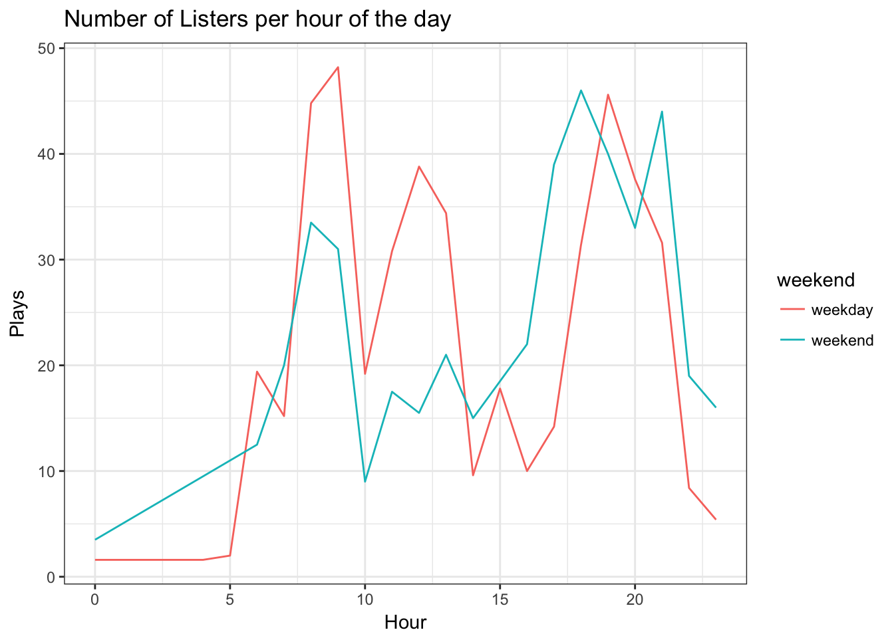
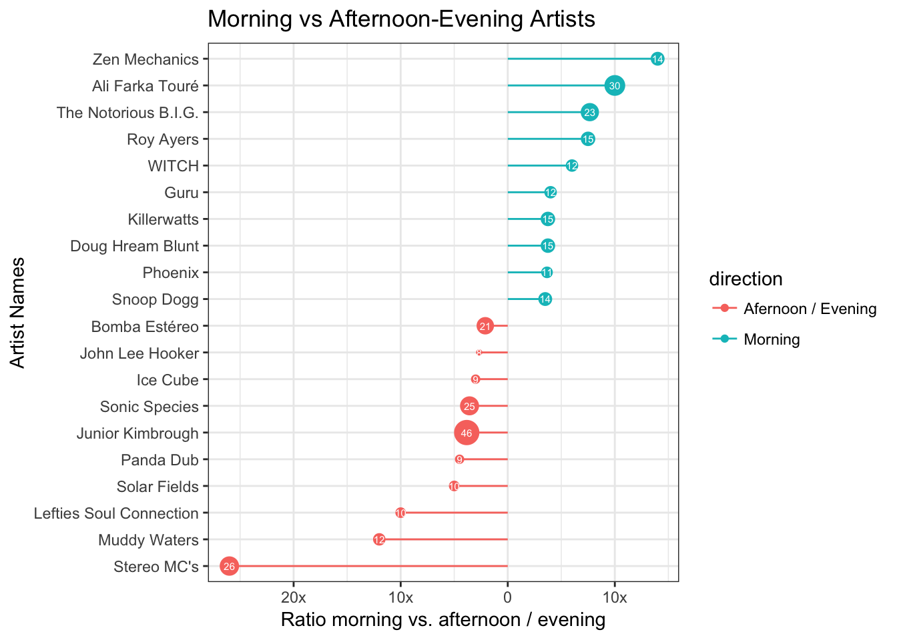

Tamas Szilagyi


Following an avalanche of +1 comments on the GitHub issue requesting access to a user’s play history, on March 1st Spotify released a new endpoint to their Web API that allows anyone with a Spotify account to pull data on his or her most recently played tracks. To access it, you need go through the Authorization Code Flow, where you get keys and tokens needed for making calls to the API. The return object contains your 50 most recently played songs enriched by some contextual data.
Being an avid Spotify user, I figured I could use my recently purchased Raspberry Pi to ping the API every 3 hours, and start collecting my Spotify data. I started begin April, so now I have almost three months worth of listening history.
How I set up a data pipeline that pings the API, parses the response and stores it as .json file, will be the subject of a follow-up post. Here, I will instead focus on exploring certain aspects of the data I thus far collected, using R.
Besides my play history, I also store additional variables for every artist, album and playlist that I have listened to as separate json files. For the purpose of this post however, I’ll only focus on my listening history and additional data on artists. You can find both files on my Github.
Let’s read the data into R, using the fromJSON() function from the jsonlite package:
library(jsonlite)
df_arts <- fromJSON("/data/spotify_artist_2017-06-30.json")
df_tracks <- fromJSON("/data/spotify_tracks_2017-06-30.json")The most important file is df_tracks; this is the parsed response from the Recently Played Tracks endpoint. Let’s take a look.
## 'data.frame': 3274 obs. of 8 variables:
## $ played_at : chr "2017-06-24T18:57:25.899Z" ...
## $ artist_name:List of 3274
## $ artist_id :List of 3274
## $ track_name : chr "People In Tha Middle" ...
## $ explicit : logi FALSE ...
## $ uri : chr "spotify:user:1170891844:playlist:29XAftFCmwVBJ64ROX8gzA" ...
## $ duration_ms: int 302138 226426 ...
## $ type : chr "playlist" ...We have a data.frame of 3274 observations and 8 variables. The number of rows is equal to the number of songs I have listened to, as the variable played_at is unique in the dataset. Here’s a short description of the the variables:
played_at: The timestamp when the track started playing.artist_name & artist_id : List of names and id’s of the artists of the song.track_name: Name of the track.explicit: Do the lyrics contain bad words?uri: Unique identifier of the context, either a playlist or an album (or empty).duration_ms: Number of miliseconds the song lasts.type : Type of the context in which the track was played.We can see two issues at first glance. For starters, the variable played_at is of class character while it should really be a timestamp. Secondly, both artist_... columns are of class list because one track can have several artists. This will become inconvenient when we want to use the variable artist_id to merge the two datasets.
The second data.frame consists of a couple of additional variables concerning the artists:
## 'data.frame': 1810 obs. of 4 variables:
## $ artist_followers : int 256962 30345 ...
## $ artist_genres :List of 1810
## $ artist_id : chr "32ogthv0BdaSMPml02X9YB" ...
## $ artist_popularity: int 64 57 ...artist_followers: The number of Spotify users following the artist.artist_genres : List of genres the artist is associated with.artist_id: Unique identifier of the artist.artist_popularity: Score from 1 to 100 regarding the artist’s popularity.By joining the two dataframes we are mostly looking to enrich the original data with artist_genre, a variable we’ll use for plotting later on. Similarly to artists, albums and tracks also have API endpoints containing a genre field. However, the more granular you get, the higher the prevalence of no associated genres. Nevertheless, there is still quite some artists where genres is left blank.
So, let’s unnest the list columns, convert played_at to timestamp and merge the the dataset with df_arts, using the key "artist_id".
library(dplyr)
library(tidyr)
merged <- df_tracks %>%
unnest(artist_name, artist_id) %>%
mutate(played_at = as.POSIXct(played_at,
tz = "CET",
format = "%Y-%m-%dT%H:%M:%S")) %>%
left_join(df_arts, by="artist_id") %>%
select(-artist_id)First things first, what was my three month top 10 most often played songs?
top10 <- merged %>%
group_by(track_name) %>%
summarise(artist_name = head(artist_name,1),
# cuz a song can have multiple artist
plays = n_distinct(played_at)) %>%
arrange(-plays) %>%
head(10)
top10## # A tibble: 10 x 3
## track_name artist_name plays
## <chr> <chr> <int>
## 1 Habiba Boef 14
## 2 Too young Phoenix 13
## 3 Give Me Water John Forte 11
## 4 Gentle Persuasion Doug Hream Blunt 10
## 5 Dia Ja Manche Dionisio Maio 9
## 6 Run, Run, Run Ann Peebles 9
## 7 Heygana Ali Farka Touré 8
## 8 It Ain't Me (with Selena Gomez) Kygo 8
## 9 Perfect World Broken Bells 8
## 10 Bencalado Zen Baboon 7How did these songs reach the top? Is there a relationship between the first time I played the song in the past three months, the number of total plays, and the period I played each the song the most? One way to explore these questions is by plotting a cumulative histogram depicting the number of plays over time for each track.
# Using ggplot2
library(ggplot2)
library(zoo)
plot <- merged %>%
filter(track_name %in% top10$track_name) %>%
mutate(doy = as.Date(played_at,
format = "%Y-%m-%d"),
track_name = factor(track_name,
levels = top10$track_name)) %>%
complete(track_name, doy = full_seq(doy, period = 1)) %>%
group_by(track_name) %>%
filter(doy >= doy[min(which(!is.na(played_at)))]) %>%
distinct(played_at, doy) %>%
mutate(cumulative_plays = cumsum(na.locf(!is.na(played_at)))) %>%
ggplot(aes(doy, cumulative_plays,fill = track_name)) +
geom_area(position = "identity") +
facet_wrap(~track_name, nrow = 2) +
ggtitle("Cumulative Histogram of Plays") +
xlab("Date") +
ylab("Cumulative Frequency") +
guides(fill = FALSE) +
theme(axis.text.x = element_text(angle = 90, hjust = 1))
plot
Most of the songs in my top 10 have a similar pattern: The first few days after discovering them, there is a sharp increase in the number of plays. Sometimes it takes a couple of listens for me to get into a track, but usually I start obsessing over it immediately. One obvious exception is the song Habiba, the song I listened to the most. The first time I heard the song, it must have gone unnoticed. Two months later, I started playing it virtually on repeat.
Moving on, let’s look at what time of the day I listen to Spotify the most. I expect weekdays to exhibit a somewhat different pattern than weekends. We can plot separate timelines of the total number of listens per hour of the day for both weekdays and weekends. Unfortunately, there are more weekdays than weekends, so we need to normalize their respective counts to arrive at a meaningful comparison.
library(lubridate)
merged %>% group_by(time_of_day = hour(played_at),
weekend = ifelse(wday(played_at) %in% c(6:7),
"weekend", "weekday")) %>%
summarise(plays = n_distinct(played_at)) %>%
mutate(plays = ifelse(weekend == "weekend", plays/2, plays/5)) %>%
ggplot(aes(time_of_day, plays, colour = weekend)) +
geom_line() +
ggtitle("Number of Listens per hour of the day") +
xlab("Hour") +
ylab("Plays")
Well, there’s a few interesting things here. On weekdays I listen to slightly more music than on weekends, mostly due to regular listening habits early on and during the day. The peak in the morning corresponds to me biking to work, followed by dip around 10 (daily stand-ups anyone?). Then, I put my headphones back on until about 14:00, to finish my Spotify activities in the evening when I get home.
On the other hand, I listen to slightly more music in the afternoon and evening when it’s weekend. Additionally, all early hours listening happens solely on weekends.
I am also interested whether there is such a thing as morning artists vs. afternoon/evening artists. In other words, which artists do I listen to more often in the morning than after noon, or the other way around. The approach I took is to count the number plays by artists, and calculate a ratio of morning / evening for each one. The result I plotted with what is apparently called a diverging lollipop chart.
The code snippet to produce this plot is tad bit too long to include here, but you can find all the code in the original RMarkdown file on Github.

On the y-axis we have the artists. The x-axis depicts the aforementioned ratio, and the size of the lollipop stands for the number of plays in the given direction, also displayed by the label.
The artists with the biggest divergences are Zen Mechanics and Stereo MC’s. For both artists, the number of plays is almost equal to the difference ratio. That means I played songs in the opposite timeframe only once. As a matter of fact, there are artists such as Junior Kimbrough or Ali Farka Touré whom I played more often in each direction, but because the plays are distributed more evenly, the ratio is not as extreme.
Lastly, let’s look at genres. Just as a track can have more than one artist to it, so can an artist have multiple associated genres, or no genre at all. To make our job less cumbersome, we first reduce our data to one genre per artist. We calculate the count of each genre in the whole dataset, and consequently select only one per artist; the one with the highest frequency. What we lose in detail, we gain in comparability.
library(purrr)
# unnest genres
unnested <- merged %>%
mutate(artist_genres = replace(artist_genres,
map(artist_genres,length) == 0,
list("none"))) %>%
unnest(artist_genres)
# calculate count and push "none" to the bottom
# so it is not included in the top genres.
gens <- unnested %>%
group_by(artist_genres) %>%
summarise(genre_count = n()) %>%
mutate(genre_count = replace(genre_count,
artist_genres == "none",
0))
# get one genre per artist
one_gen_per_a <- unnested %>%
left_join(gens, by = "artist_genres") %>%
group_by(artist_name) %>%
filter(genre_count == max(genre_count)) %>%
mutate(first_genre = head(artist_genres, 1)) %>%
filter(artist_genres == first_genre)Now that the genre column is dealt with, we can proceed to look at my favourite genres.
## # A tibble: 10 x 2
## artist_genres plays
## <chr> <int>
## 1 jazz blues 401
## 2 hip hop 351
## 3 psychedelic trance 302
## 4 funk 251
## 5 electronic 210
## 6 pop 79
## 7 psychill 70
## 8 afrobeat 64
## 9 classic rock 63
## 10 chillstep 62Again, I am interested in whether there is a pattern in the genres I listen to. More specifically, it would be cool to see how my preferences evolve over time, if at all. The axes I want to plot my data along are the cumulative frequency and recency of songs played of a given genre.
This is exactly what lifecycle grids are made of, albeit usually used for customer segmentation. In a classical example, the more often you purchased a product, and the more recent your last purchase was, the more valuable you are as customer. I first read about these charts on the analyzecore blog, which discusses these plots in more detail, including full code examples in ggplot2. I highly recommend reading it if you’re interested.
Clearly, we are not concerned with customer segmentation here, but what if we substituted customers with artist genres, and purchases with listens. These charts are like snapshots: how the grid is filled depends on the moment in time it was plotted. So to add an extra layer of intuition, I used the gganimate package to create an animated plot that follows my preferences as days go by.
To be able to generate such a plot, we need to expand our dataset to include all possible combinations of dates and genres and deal with resulting missing values appropriately:
genres_by_day <- one_gen_per_a %>%
# only look at top 20 genres
filter(artist_genres %in% top20genres$artist_genres) %>%
group_by(artist_genres, doy = as.Date(played_at)) %>%
arrange(doy) %>%
summarise(frequency = n_distinct(played_at)) %>%
ungroup() %>%
complete(artist_genres, doy = full_seq(doy, period = 1)) %>%
group_by(artist_genres) %>%
mutate(frequency = replace(frequency,
is.na(frequency),
0),
first_played = min(doy[min(which(frequency != 0))]),
last_played = as.Date(ifelse(frequency == 0, NA, doy)),
cumulative_frequency = cumsum(frequency),
last_played = replace(last_played,
doy < first_played,
first_played),
last_played = na.locf(last_played),
recency = doy - last_played)After binning both cumulative_frequency and recency from the resulting dataset, we can proceed with creating our animated lifecycle grid using ggplot2 and gganimate. All we need to do is specify the frame = variable inside the aes(), and our plot comes to life!
gg_life <- genres_by_day %>%
ggplot(aes(x = genre, y = cumulative_frequency,
fill = artist_genres, frame = doy,
alpha = 0.8)) +
theme_bw() +
theme(panel.grid = element_blank())+
geom_bar(stat="identity",position="identity") +
facet_grid(segm.freq ~ segm.rec, drop = FALSE) +
ggtitle("LifeCycle Grid") +
xlab("Genres") +
ylab("Cumulative Frequency") +
guides(fill = guide_legend(ncol = 1),
alpha = FALSE)
gganimate(gg_life)
More than anything, the plot makes it obvious that I cannot go on for too long without listening to my favourite genres such as jazz blues, hip hop and psychedelic trance. My least often played genres from the top 20 on the other hand are distributed pretty evenly across the recency axis of my plot in the last row (containing genres with less than or equal to 50 listens).
Clearly, there are tons of other interesting questions that could be explored using this dataset. We could for example look at how many tracks I usually listen to in one go, which songs I skipped over, how my different playlists are growing over time, which playlist or albums I listen to the most…and the list goes on.
I’ll go into more detail on my approach to automating acquisition and cleaning of this data in a next post, but if you just cannot wait to start collecting your own Spotify listening history, I encourage you to go through Spotify’s authoriziation flow and set up a simple cronjob that pings the API X times a day. The sooner you start collecting your data, the more you’ll have to play with. Everything else can be dealt with later.